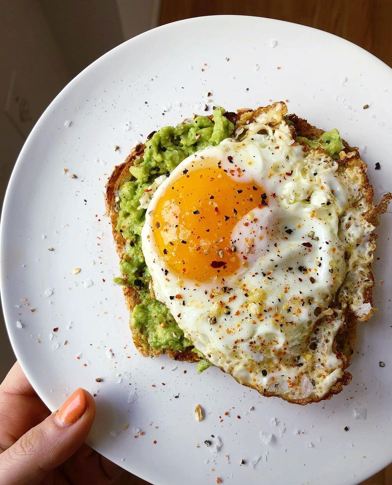

Avocado Toast With the Stuff You Have at Home

Description
This avocado and egg toast recipe is a minimally invasive, quick and easy recipe just to hit that breakfast for dinner sweet spot, or to even just have it for breakfast like a champ. The ingredients list may look large, but you can omit anything you don't have (except for the first three items) and it will still taste great
Ingredients (makes 2 pieces of bread's worth)
- Avocado (1)
- Bread (2 slices)
- Eggs (2)
- Cilantro (2 tsp, chopped finely)
- Spring Onion (1/4 sprig)
- Onion (1/4 of a whole)
- Tomato (1/2 of a whole)
- Lime juice (<1 tsp)
- Salt
- Black Pepper
- Garlic Powder
- Chili Flakes (optional)
- Hot Sauce (Optional)
Directions (10 Minutes)
- Cut the avocado in half, pull out the seed but dont throw it away. Take the bigger half of the avocado (you didn't cut it evenly, like always), and slice it into thin squares like this. Use a spoon to take it out of its carass and put it in to a bowl. Place the seed in the bowl (this helps to preserve it) and cover while you prep other things)
- Roughly dice the onions and tomatoes to the best of your ability. Also, finely chop the cilatro and cut the spring onions into small rings. Using a serated knife (one with teeth) will make it easier to cut tomato with more precision. Before adding it to the bowl of cubed avo, take the see out of the bowl and mash the avocado alone to a guac-like consistency. Then add the onions and tomatoes as well as 1 tsp of cilantro
- Add salt, black pepper, and a hint of garlic powder to your basically-guac bowl to taste. Add a few drops of lime juice (7-10) and mix gently to not. If you want a real flavor blast, try adding a pinch of cumin powder!
- With that out of the way, cut the other half of avacado into strips by following only step 1 of the cube guide. We will use this later
- Put a pan on the stove, and add any neutral cooking oil (canola, vegetable, etc) and let it get hot. We want the egg to sizzle on first contact.
- When the oil is hot, crack your 2 eggs directly over the pan leaving the yolk in tact. Season the top with salt and black pepper, and optionally, chili flakes. Then cover your pan. This is to trap some steam and cook the top of the egg without having to flip it
- Toast the bread in a toaster
- When the egg sets on top, give it an extra 30 seconds then turn off the heat. Keep the eggs in the pan with the lid on. It's still cooking while everything else finishes up.
- When the toast is ready, pull it out and distrubute the avocado-spread evenly amongst the two pieces
- Take out the eggs from the pan and lay them on top
- Take out the other half of the avocado and place the strips directly over the eggs. Season them with a pinch of salt and black pepper. This way we consume avocado both in its mashed form and solid form.
- Sprinkle the cilantro and spring onions on top
- Lastly, scatter a few drops of hot sauce, add some chili flakes if you like
Boom. Thats avocado toast done in 10 minutes or less. This is the fully fleshed recipe, but if you dont have any part of it, just leave it out- no harm done. Careful though, if you add too much hot sauce you'll be awake all night.
{kind=link}